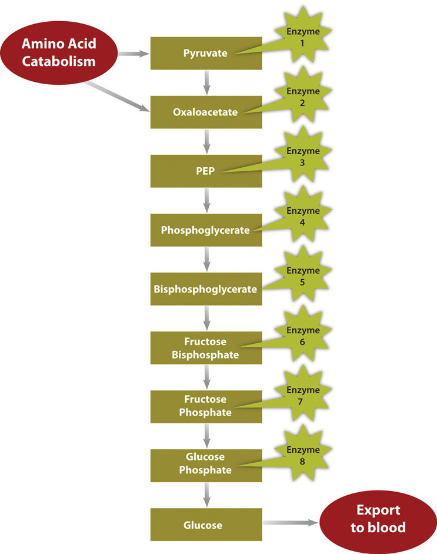

Throughout the various chapters in this text we have explored the metabolism of carbohydrates, lipids, and proteins. In this next section we will compile this information for a clear picture of the importance of metabolism in human nutrition.
MetabolismThe sum of all chemical reactions required to support cellular function and hence the life of an organism. is defined as the sum of all chemical reactions required to support cellular function and hence the life of an organism. Metabolism is either categorized as catabolismAll metabolic processes involved in molecule breakdown and the release of energy., referring to all metabolic processes involved in molecule breakdown, or anabolismAll metabolic processes involved in building bigger molecules, which consume energy., which includes all metabolic processes involved in building bigger molecules. Generally, catabolic processes release energy and anabolic processes consume energy. The overall goals of metabolism are energy transfer and matter transport. Energy is transformed from food macronutrients into cellular energy, which is used to perform cellular work. Metabolism transforms the matter of macronutrients into substances a cell can use to grow and reproduce and also into waste products. In Chapter 6 "Proteins", you learned that enzymes are proteins and that their job is to catalyze chemical reactions. (Recall that the word catalyze means to speed-up a chemical reaction and reduce the energy required to complete the chemical reaction, without the catalyst being used up in the reaction.) Without enzymes, chemical reactions would not happen at a fast enough rate and would use up too much energy for life to exist. A metabolic pathway is a series of enzymatic reactions that transforms the starting material (known as a substrate) into intermediates, which are the substrates for the next enzymatic reactions in the pathway, until, finally, an endproduct is synthesized by the last enzymatic reaction in the pathway. Some metabolic pathways are complex and involve many enzymatic reactions, and others involve only a few chemical reactions.
To ensure cellular efficiency, the metabolic pathways involved in catabolism and anabolism are regulated in concert by energy status, hormones, and substrate and end-product levels. The concerted regulation of metabolic pathways prevents cells from inefficiently building a molecule when it is already available. Just as it would be inefficient to build a wall at the same time as it is being broken down, it is not metabolically efficient for a cell to synthesize fatty acids and break them down at the same time.
Catabolism of food molecules begins when food enters the mouth, as the enzyme salivary amylase initiates the breakdown of carbohydrates. The entire process of digestion converts the large polymers in food to monomers that can be absorbed. Carbohydrates are broken down to monosaccharides, lipids are broken down to fatty acids, and proteins are broken down to amino acids. These monomers are absorbed into the bloodstream either directly, as is the case with monosaccharides and amino acids, or repackaged in intestinal cells for transport by an indirect route through lymphatic vessels, as is the case with fatty acids and other fat-soluble molecules. Once absorbed, blood transports the nutrients to cells. Cells requiring energy or building blocks take up the nutrients from the blood and process them in either catabolic or anabolic pathways. The organ systems of the body require fuel and building blocks to perform the many fucntions of the body, such as digesting, absorbing, breathing, pumping blood, transporting nutrients in and wastes out, maintaining body temperature, and making new cells.
Metabolism is categorized into metabolic pathways that breakdown the molecules that release energy (catabolism) and the molecules that consume energy by building bigger molecules (anabolism).
Energy metabolismThe metabolic pathways that release or store energy. refers more specifically to the metabolic pathways that release or store energy. Some of these are catabolic pathways, like glycolysis (the splitting of glucose), β-oxidation (fatty-acid breakdown), and amino acid catabolism. Others are anabolic pathways, and include those involved in storing excess energy (such as glycogenisis), and synthesizing triglycerides (lipogenesis). Table 10.2 "Metabolic Pathways" summarizes some of the catabolic and anabolic pathways, and their functions in energy metabolism.
Table 10.2 Metabolic Pathways
| Catabolic Pathways | Function | Anabolic Pathways | Function |
|---|---|---|---|
| Glycolysis | Glucose breakdown | Gluconeogenesis | Synthesize glucose |
| Glycogenolysis | Glycogen breakdown | Glycogenesis | Synthesize glycogen |
| β-oxidation | Fatty-acid breakdown | Lipogenesis | Synthesize triglycerides |
| Proteolysis | Protein breakdown to amino acids | Amino-acid synthesis | Synthesize amino acids |
All cells are in tune to their energy balance. When energy levels are high cells build molecules, and when energy levels are low catabolic pathways are initiated to make energy. Glucose is the preferred energy source by most tissues, but fatty acids and amino acids can also be catabolized to the cellular energy molecule, ATP. The catabolism of nutrients to energy can be separated into three stages, each containing individual metabolic pathways. The three stages of nutrient breakdown allow for cells to reassess their energy requirements, as endproducts of each pathway can either be further processed to energy or diverted to anabolic pathways. Additionally, intermediates of metabolic pathways can sometimes be diverted to anabolic pathways once cellular energy requirements have been met. The three stages of nutrient breakdown are the following:
The breakdown of glucose begins with glycolysis, which is a ten-step metabolic pathway yielding two ATP per glucose molecule; glycolysis takes place in the cytosol and does not require oxygen. In addition to ATP, the end-products of glycolysis include two three-carbon molecules, called pyruvate. Pyruvate can either be shuttled to the citric acid cycle to make more ATP or follow an anabolic pathway. If a cell is in negative-energy balance, pyruvate is transported to the mitochondria where it first gets one of its carbons chopped off, yielding acetyl-CoA. Acetyl-CoA, a two-carbon molecule common to glucose, lipid, and protein metabolism enters the second stage of energy metabolism, the citric acid cycle. The breakdown of fatty acids begins with the catabolic pathway, known as β-oxidation, which takes place in the mitochondria. In this catabolic pathway, four enzymatic steps sequentially remove two-carbon molecules from long chains of fatty acids, yielding acetyl-CoA molecules. In the case of amino acids, once the nitrogen is removed from the amino acid the remaining carbon skeleton can be enzymatically converted into acetyl-CoA or some other intermediate of the citric acid cycle.
In the citric acid cycle acetyl-CoA is joined to a four-carbon molecule. In this multistep pathway, two carbons are lost as two molecules of carbon dioxide. The energy obtained from the breaking of chemical bonds in the citric acid cycle is transformed into two more ATP molecules (or equivalents thereof) and high energy electrons that are carried by the molecules, nicotinamide adenine dinucleotide (NADH) and flavin adenine dinucleotide (FADH2). NADH and FADH2 carry the electrons to the inner membrane in the mitochondria where the third stage of energy synthesis takes place, in what is called the electron transport chain. In this metabolic pathway a sequential transfer of electrons between multiple proteins occurs and ATP is synthesized. The entire process of nutrient catabolism is chemically similar to burning, as carbon molecules are burnt producing carbon dioxide, water, and heat. However, the many chemical reactions in nutrient catabolism slow the breakdown of carbon molecules so that much of the energy can be captured and not transformed into heat and light. Complete nutrient catabolism is between 30 and 40 percent efficient, and some of the energy is therefore released as heat. Heat is a vital product of nutrient catabolism and is involved in maintaining body temperature. If cells were too efficient at transforming nutrient energy into ATP, humans would not last to the next meal, as they would die of hypothermia.
The energy released by catabolic pathways powers anabolic pathways in the building of macromolecules such as the proteins RNA and DNA, and even entire new cells and tissues. Anabolic pathways are required to build new tissue, such as muscle, after prolonged exercise or the remodeling of bone tissue, a process involving both catabolic and anabolic pathways. Anabolic pathways also build energy-storage molecules, such as glycogen and triglycerides. Intermediates in the catabolic pathways of energy metabolism are sometimes diverted from ATP production and used as building blocks instead. This happens when a cell is in positive-energy balance. For example, the citric-acid-cycle intermediate, α-ketoglutarate can be anabolically processed to the amino acids glutamate or glutamine if they are required. Recall from Chapter 6 "Proteins" that the human body is capable of synthesizing eleven of the twenty amino acids that make up proteins. The metabolic pathways of amino acid synthesis are all inhibited by the specific amino acid that is the end-product of a given pathway. Thus, if a cell has enough glutamine it turns off its synthesis.
Anabolic pathways are regulated by their end-products, but even more so by the energy state of the cell. When there is ample energy, bigger molecules, such as protein, RNA and DNA, will be built as needed. Alternatively when energy is insufficient, proteins and other molecules will be destroyed and catabolized to release energy. A dramatic example of this is seen in children with Marasmus. These children have severely compromised bodily functions, often culminating in death by infection. Children with Marasmus are starving for calories and protein, which are required to make energy and build macromolecules. The negative-energy balance in children who have Marasmus results in the breakdown of muscle tissue and tissues of other organs in the body’s attempt to survive. The large decrease in muscle tissue makes children with Marasmus look emaciated or “muscle-wasted.”
Figure 10.2 Metabolic Pathway of Gluconeogenesis
In a much less severe example, a person is also in negative-energy balance between meals. During this time, blood-glucose levels start to drop. In order to restore blood-glucose levels to their normal range, the anabolic pathway, called gluconeogenesis, is stimulated. Gluconeogenesis is the process of building glucose molecules from certain amino acids and it occurs primarily in the liver (Figure 10.2 "Metabolic Pathway of Gluconeogenesis"). The liver exports the synthesized glucose into the blood for other tissues to use.
In contrast, in the “fed” state (when energy levels are high), extra energy from nutrients will be stored. Glucose can be stored only in muscle and liver tissues. In these tissues it is stored as glycogen, a highly branched macromolecule consisting of thousands of glucose monomers held together by chemical bonds. The glucose monomers are joined together by an anabolic pathway called glycogenesis. For each molecule of glucose stored, one molecule of ATP is used. Therefore, it costs energy to store energy. Glycogen levels do not take long to reach their physiological limit and when this happens excess glucose will be converted to fat. A cell in positive-energy balance detects a high concentration of ATP as well as acetyl-CoA produced by catabolic pathways. In response, catabolism is shut off and the synthesis of triglycerides, which occurs by an anabolic pathway called lipogenesis, is turned on. The newly made triglycerides are transported to fat-storing cells called adipocytes. Fat is a better alternative to glycogen for energy storage as it is more compact (per unit of energy) and, unlike glycogen, the body does not store water along with fat. Water weighs a significant amount and increased glycogen stores, which are accompanied by water, would dramatically increase body weight. When the body is in positive-energy balance, excess carbohydrates, lipids, and protein are all metabolized to fat.